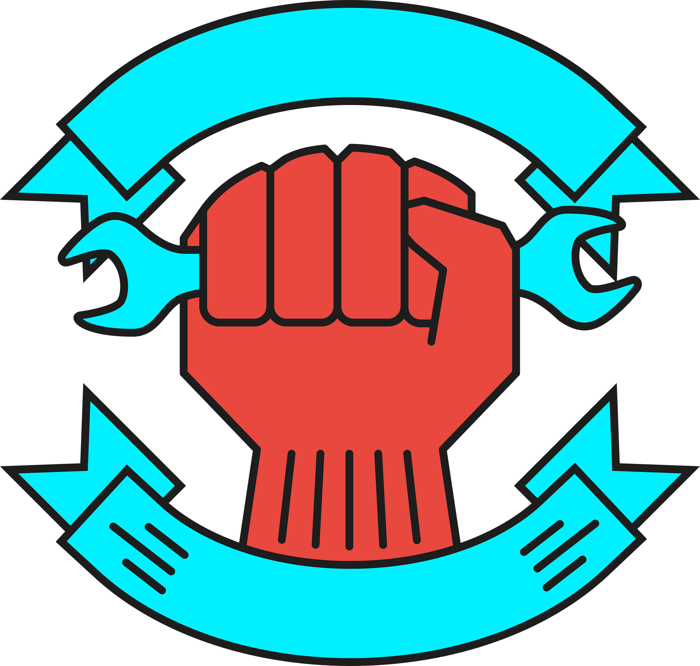

<mat-toolbar color="primary">
    
    <a style="margin-right: 20px;" [routerLink]="['/homepage']">TrueVendor</a>
    <!-- <a [routerLink]="['/homepage']">Home</a> -->
    <span class="example-spacer"></span>
    <div class="mr-4">
        <ng-container *ngIf="isLoggedIn; else joinButton">
            <button mat-raised-button [matMenuTriggerFor]="userMenu" style="border-width: solid;">
                <mat-icon>account_circle</mat-icon>
                {{userName}}
            </button>
            <mat-menu #userMenu="matMenu">
                <button mat-menu-item routerLink="/controlpanel">Profile</button>
                <button mat-menu-item (click)="logout()">Logout</button>
            </mat-menu>
        </ng-container>
        <ng-template #joinButton>
            <button mat-raised-button class="mr-4" [routerLink]="['/login']" style="margin-right: 10px;">
                Join Us
            </button>
            <button mat-raised-button>
                About Us
            </button>
        </ng-template>
    </div>
</mat-toolbar>
